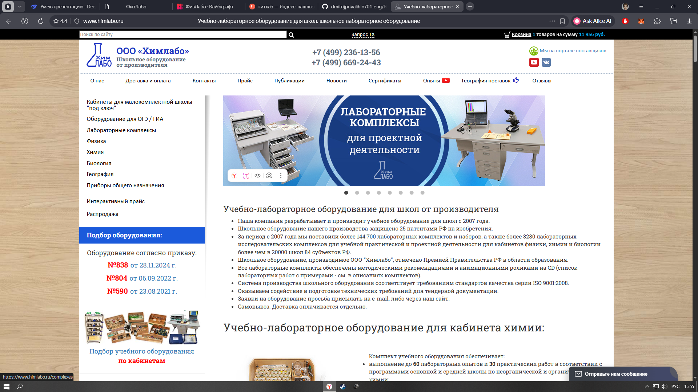
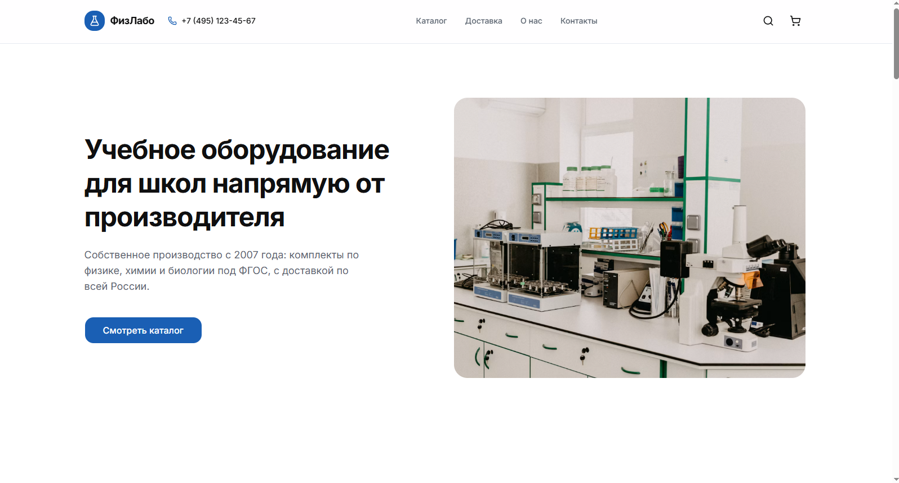
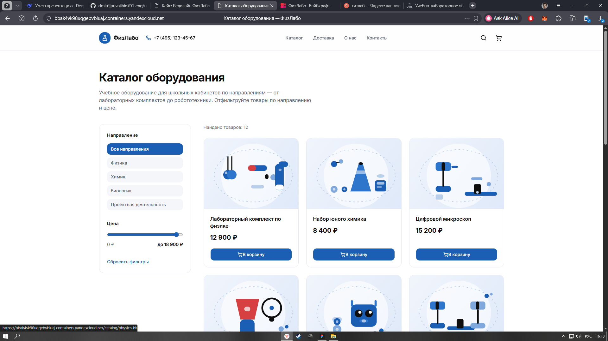

Полный цикл: от проектирования в Figma до сборки интерактивного прототипа. Фокус на B2B-продажи и удобство для школ.
Я провёл аудит сайтов производителей школьного оборудования и заметил общую проблему: устаревший дизайн, перегруженный каталог и отсутствие онлайн-инструментов для быстрой закупки. Вот как выглядел оригинальный сайт:

Оригинальный сайт: сложная навигация, устаревшая типографика
Ниже показана обновленная главная страница, которая сразу формирует доверие и ведет пользователя к оформлению заявки:

Новая главная: фокус на производителе и понятные категории
А так выглядит каталог, где учитель или завуч может отфильтровать товары по предмету и цене:

Новый каталог с удобными фильтрами и карточками товаров
• Снижение нагрузки на менеджеров (клиенты сами формируют запросы).
• Рост конверсии в заявку за счет понятной структуры.
• Улучшение имиджа: производитель выглядит современно и технологично.